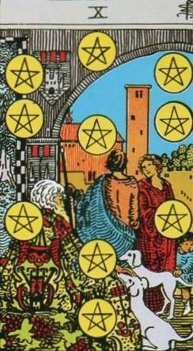
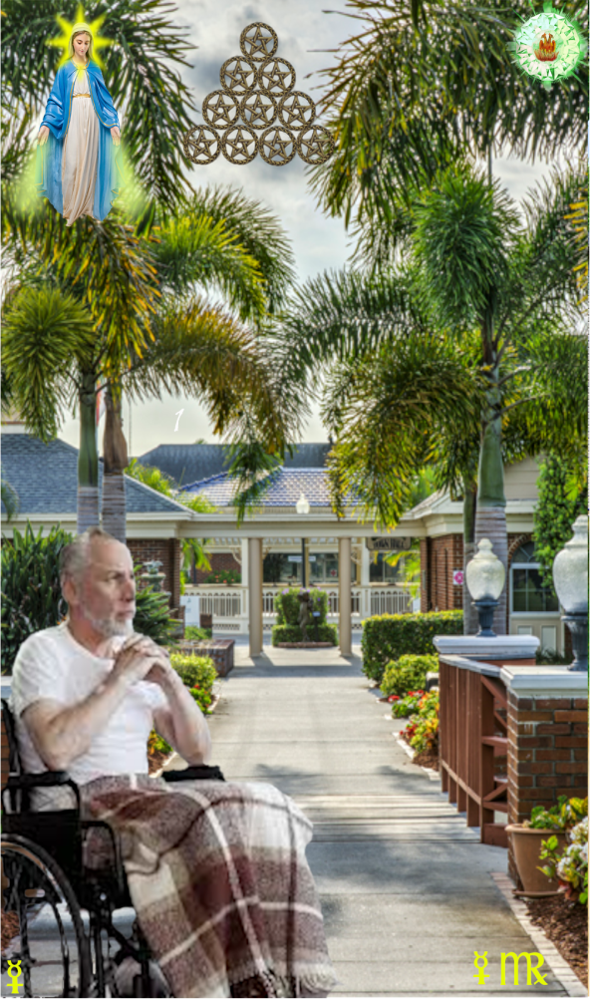
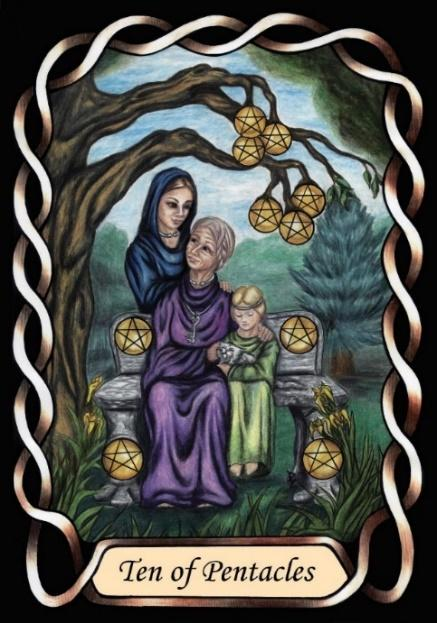

Ten of Pentacles



Sign |
|
Six: Age |
|
Sign Ruler |
|
Element |
Earth: practical |
Modality |
|
Symbol |
Virgin |
Decan |
|
Decan Ruler |
|
Time |
Sep 14 - 24 |
Infirmity Virgo III
A Master of infirmity and age is surrounded by wealth and luxury, but being infirm of body, and doubly ruled by Mercury, is envious of those in good health, and would gladly swap it all to be young again. He may well regret time wasted in the past in pursuit of wealth, rather than happiness and experiences.
Goldschneider Personology
The Mercury influence on these Virgos adds a strong linguistic and communication component to the Virgo practicality. Natural lawyers, they will expand and demand that people keep their word. (See the Temperance card, with Iris standing in for Mercury). They have a quickness of mind that allows competence in many activities. Often their conservative appearance will belie quite surprising pass-times with dramatic flair.
RWS Imagery
An indication of the futility of a life spent in the pursuit of material gain. “You can’t take it with you”. This decade is the last of the first half of the zodiac. Hence it, and Virgon general, are considered to be old, or end-of-life. Virgos also associated with health issues, as these occur more towards end of life.
The pentagrams are arranged in the tree of life pattern, indicating that the manifestation down the tree, the descent, is complete
Pymander Imagery
An old man in a wheelchair, outside a nursing home, coming to terms with loss of abilities, freedom, and impending Death.
Summary
Represents regret, longing for youth, and re-evaluation of priorities.